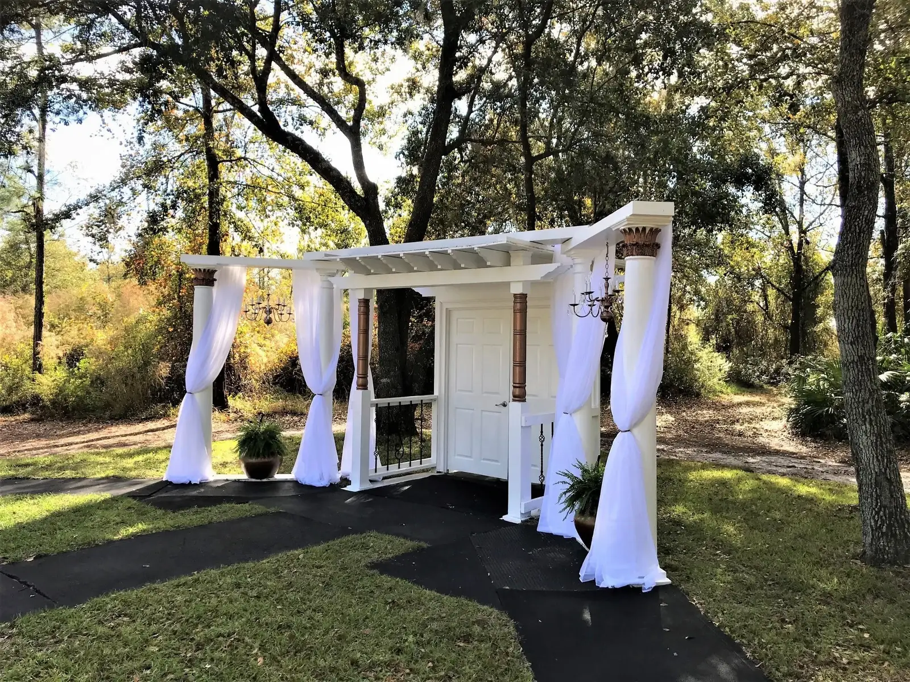
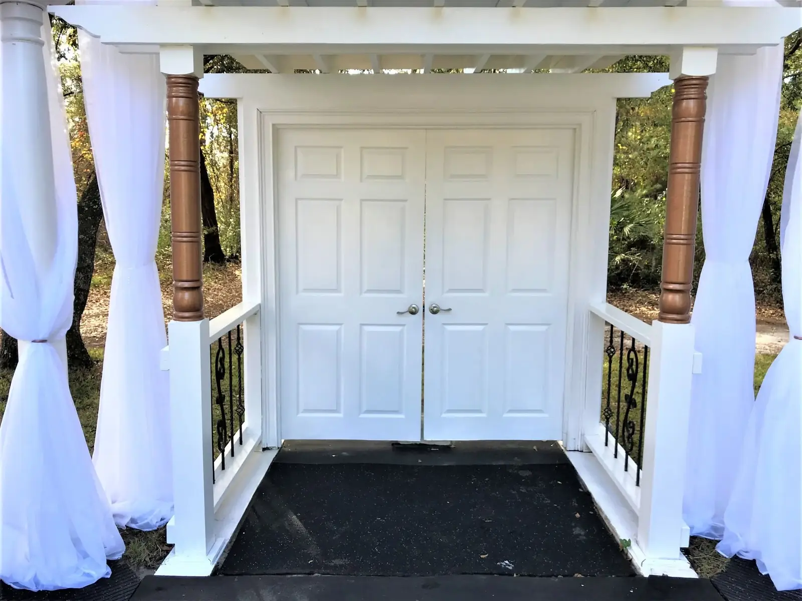

The Gallery
A glimpse of the oaks
Drag through the colonnades, the barn and real celebrations. Tap any photo to see it larger.


26 photos of the oaks, ceremony sites & celebrations
Start the Next Chapter
Come see it in person.
Photos are lovely, but nothing compares to walking beneath the oaks yourself. Schedule a tour and check availability for your date.